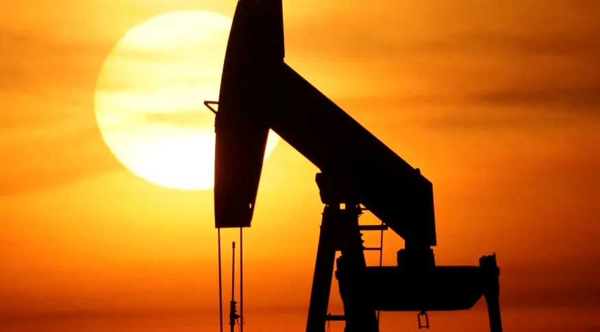

Dolar americano hoje
O dólar americano tem apresentado um desempenho misto em relação a outras moedas nas últimas semanas. Em relação ao euro e ao iene japonês, o dólar tem mostrado certa estabilidade, com pequenas flutuações diárias. No entanto, em relação ao dólar canadense e ao dólar australiano, o dólar americano tem sofrido desvalorizações significativas, devido a fatores como o aumento dos preços das commodities e a melhora da economia em ambos os países.
Ler mais

Zona do Euro
O euro tem apresentado um desempenho positivo em relação ao dólar americano nas últimas semanas, alcançando o seu nível mais alto em dois meses. A moeda única europeia tem sido impulsionada por vários fatores, incluindo a melhoria das perspectivas econômicas da zona do euro, a recuperação da atividade empresarial na região e a crescente confiança dos investidores em relação ao futuro da Europa.
Ler mais

Notícia sobre petroleo
O preço do petróleo tem apresentado uma alta constante nas últimas semanas, impulsionado pelo aumento da demanda e pela recuperação da economia global após a pandemia de COVID-19. Além disso, a redução na oferta de petróleo de alguns países produtores, como a Arábia Saudita, tem ajudado a impulsionar o preço do petróleo.
Ler mais